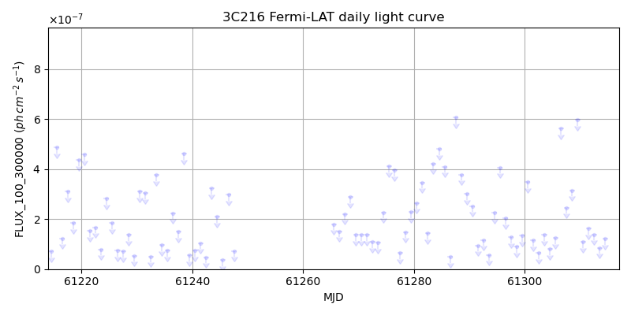
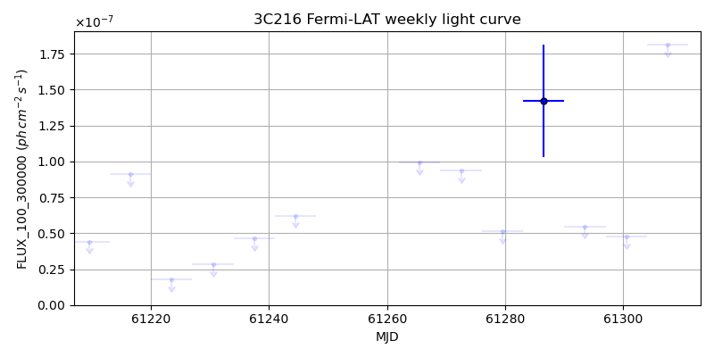
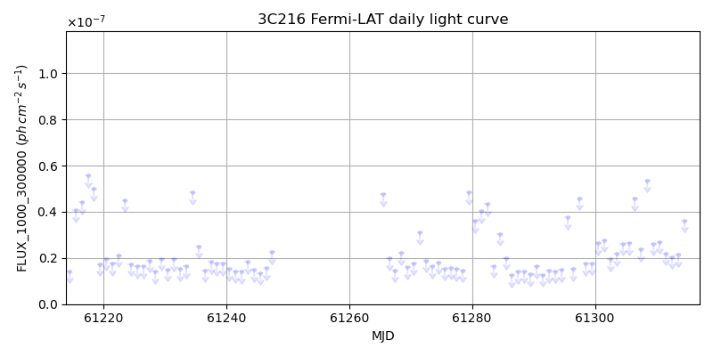
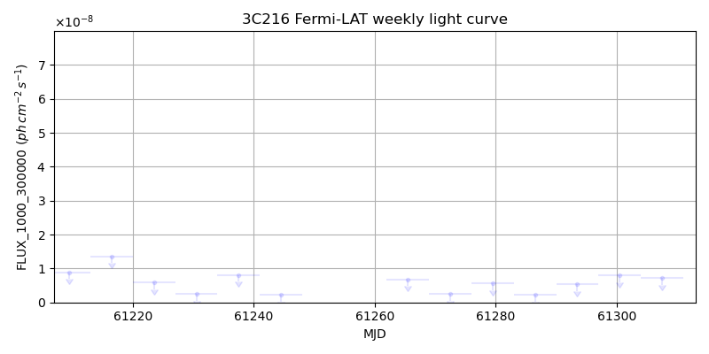

LAT Lightcurve site: https://fermi.gsfc.nasa.gov/ssc/data/access/lat/msl_lc/source/3C_216
NED: Query
Time of last update of this page: UT: 2026-10-02 15:20 (MJD: 61315.639)
| Property | Value |
|---|---|
| R.A. | 9:09:33.60 |
| Dec. | 42:53:45.6 |
| z | 0.670 |
| 3FGL SpectrumType | |
| 3FGL PL Index | -1.00 |
| 3FGL Flux_100_300000 | -1.00e+00 |
| 3FGL Flux_1000_300000 | -1.00e+00 |
| 3FGL Flux >200 GeV | -1.00e+00 |
| 3FGL Extrap. Crab >200 GeV | -1.00 |
| 3FGL Flux After EBL Absorption >200GeV | -1.00e+00 |
| 3FGL EBL Crab Fraction >200GeV | -1.00 |

| MJD | dMJD | Flux | dFlux | Frac3FGL | FracCrab>200GeV | EBLFracCrab>200GeV |
|---|---|---|---|---|---|---|
| 61310.50 | 0.50 | 1.08e-07 | 0.00e+00 | 0.00 | 0.00 | -0.00 |
| 61311.50 | 0.50 | 1.62e-07 | 0.00e+00 | 0.00 | 0.00 | -0.00 |
| 61312.50 | 0.50 | 1.39e-07 | 0.00e+00 | 0.00 | 0.00 | -0.00 |
| 61313.50 | 0.50 | 8.53e-08 | 0.00e+00 | 0.00 | 0.00 | -0.00 |
| 61314.50 | 0.50 | 1.21e-07 | 0.00e+00 | 0.00 | 0.00 | -0.00 |

| MJD | dMJD | Flux | dFlux | Frac3FGL | FracCrab>200GeV | EBLFracCrab>200GeV |
|---|---|---|---|---|---|---|
| 61279.50 | 3.50 | 5.11e-08 | 0.00e+00 | 0.00 | 0.00 | -0.00 |
| 61286.50 | 3.50 | 1.42e-07 | 0.00e+00 | 0.00 | 0.00 | -0.00 |
| 61293.50 | 3.50 | 5.47e-08 | 0.00e+00 | 0.00 | 0.00 | -0.00 |
| 61300.50 | 3.50 | 4.75e-08 | 0.00e+00 | 0.00 | 0.00 | -0.00 |
| 61307.50 | 3.50 | 1.81e-07 | 0.00e+00 | 0.00 | 0.00 | -0.00 |

| MJD | dMJD | Flux | dFlux | Frac3FGL | FracCrab>200GeV | EBLFracCrab>200GeV |
|---|---|---|---|---|---|---|
| 61310.50 | 0.50 | 2.70e-08 | 0.00e+00 | 0.00 | 0.00 | -0.00 |
| 61311.50 | 0.50 | 2.20e-08 | 0.00e+00 | 0.00 | 0.00 | -0.00 |
| 61312.50 | 0.50 | 2.05e-08 | 0.00e+00 | 0.00 | 0.00 | -0.00 |
| 61313.50 | 0.50 | 2.13e-08 | 0.00e+00 | 0.00 | 0.00 | -0.00 |
| 61314.50 | 0.50 | 3.62e-08 | 0.00e+00 | 0.00 | 0.00 | -0.00 |

| MJD | dMJD | Flux | dFlux | Frac3FGL | FracCrab>200GeV | EBLFracCrab>200GeV |
|---|---|---|---|---|---|---|
| 61279.50 | 3.50 | 5.70e-09 | 0.00e+00 | 0.00 | 0.00 | -0.00 |
| 61286.50 | 3.50 | 2.29e-09 | 0.00e+00 | 0.00 | 0.00 | -0.00 |
| 61293.50 | 3.50 | 5.33e-09 | 0.00e+00 | 0.00 | 0.00 | -0.00 |
| 61300.50 | 3.50 | 7.91e-09 | 0.00e+00 | 0.00 | 0.00 | -0.00 |
| 61307.50 | 3.50 | 7.12e-09 | 0.00e+00 | 0.00 | 0.00 | -0.00 |
--------------------------------------------------------- Using user-supplied coords: 9:09:33.60 42:53:45.6 2000 --------------------------------------------------------- FLWO UT night of: 2026-10-03 Local Sid. @ Midnight: 00:24 Sunset (-15.0) (local, UT): 19:14 02:14 Sunrise (-15.0) (local, UT): 05:12 12:12 Moonrise (local, UT): 22:48 05:48 Moonset (local, UT): Moon phase: 0.53 --------------------------------------------------------- AzTime LSID UT Obj_el Obj_az Mn_el Mn_az Sep. --------------------------------------------------------- 19:14 19:37 02:14 -12.5 342.6 -28.5 20.1 38.4 19:44 20:07 02:44 -14.1 348.0 -26.2 26.7 38.1 20:14 20:37 03:14 -15.1 353.6 -23.2 32.8 37.8 20:44 21:07 03:44 -15.5 359.3 -19.6 38.5 37.5 21:14 21:37 04:14 -15.3 5.0 -15.7 43.6 37.2 21:44 22:07 04:44 -14.4 10.6 -11.3 48.4 36.9 22:14 22:37 05:14 -12.9 16.1 -6.5 52.7 36.6 22:44 23:07 05:44 -10.9 21.3 -0.8 56.7 36.3 23:14 23:37 06:14 -8.3 26.3 3.8 60.4 36.1 23:44 00:07 06:44 -4.8 30.9 9.1 63.9 35.8 00:14 00:38 07:14 -0.9 35.2 14.6 67.1 35.6 00:44 01:08 07:44 2.4 39.1 20.3 70.2 35.3 01:14 01:38 08:14 6.4 42.7 26.1 73.1 35.1 01:44 02:08 08:44 10.9 46.0 32.1 76.0 34.9 02:14 02:38 09:14 15.6 48.9 38.1 78.8 34.7 02:44 03:08 09:44 20.5 51.5 44.2 81.7 34.5 03:14 03:38 10:14 25.6 53.9 50.3 84.8 34.3 03:44 04:08 10:44 30.8 55.8 56.5 88.1 34.1 04:14 04:38 11:14 36.1 57.5 62.7 91.9 34.0 04:44 05:08 11:44 41.6 58.7 68.9 96.9 33.8 05:12 05:37 12:12 46.8 59.4 74.7 103.8 33.7 --------------------------------------------------------- Dark hours >55 deg.: 0.00